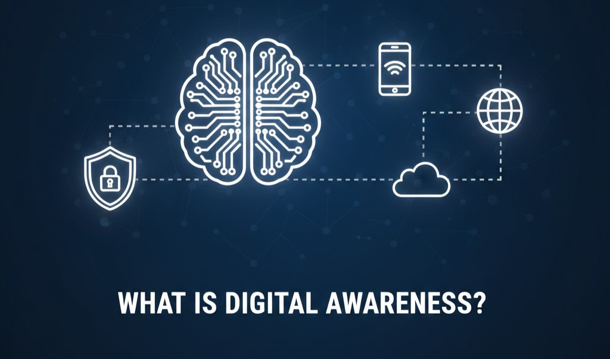
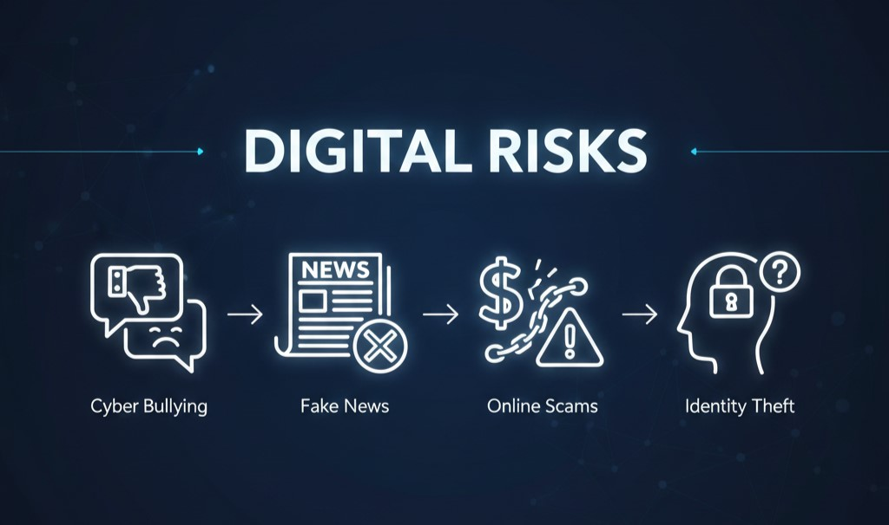
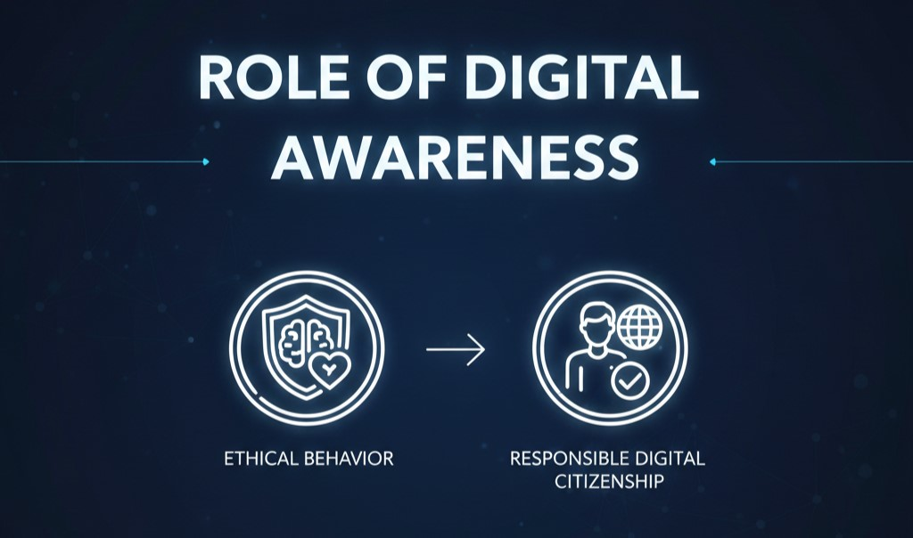

Digital Awareness
Understanding and using digital technology responsibly
What is Digital Awareness?

Digital Awareness refers to the understanding of how digital technologies,
the internet and online platforms work and how to use them responsibly.
It helps users become aware of digital tools such as smartphones, computers,
social media and online services.
Digital awareness teaches people how information is created, shared and stored online.
It also helps users understand the benefits and risks of digital technology.
Being digitally aware means knowing how to communicate safely and respectfully online.
It encourages responsible use of digital platforms and technology.
Digital awareness plays an important role in today’s digital society.
Importance of Digital Awareness
Digital Awareness is important because technology is a major part of
education, communication, business and daily life.
People use digital platforms for learning, banking, shopping and social interaction.
Without digital awareness, users may fall victim to online fraud, fake news
and cyber crimes.
Digital awareness helps users protect their privacy and personal information.
It enables people to identify reliable information and avoid misinformation.
Digital awareness also promotes safe and ethical use of digital resources.
Overall, it helps users make smart and informed decisions online.
Digital Risks

Digital Risks are the dangers that arise due to improper or careless
use of digital technology.
These risks can affect personal safety, privacy and mental well-being.
Some common digital risks include:
• Cyber Bullying: Harassment or bullying using digital platforms.
• Fake News: False or misleading information spread online.
• Online Scams: Fraudulent activities to steal money or data.
• Identity Theft: Misuse of personal information without permission.
• Data Privacy Issues: Unauthorized access to personal data.
Being aware of these digital risks helps users stay cautious and avoid harmful
online activities.
Role of Digital Awareness

The Role of Digital Awareness is to create responsible and informed
digital citizens.
It helps individuals use technology safely, ethically and confidently.
Digital awareness promotes respectful online communication and positive digital behavior.
It encourages critical thinking while consuming online information.
Digital awareness also supports safe participation in digital communities
and social media platforms.
By promoting awareness, individuals can protect themselves and others
from digital threats.
It plays a key role in building a safe and trustworthy digital environment.